Experience
Professional roles, internships and organizational leadership across mechatronics engineering and industrial operations.
Project Supervisor & Refractory Production Lead
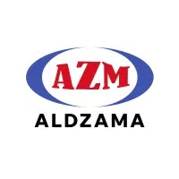
PT Aldzama, Kiln Demolition (PT Hensheng New Energy) / Launder Cover Refractory (PTFI)
- Spearheaded on-site supervision of kiln demolition workflows with a verified zero-LTI safety record.
- Enforced K3/HSE compliance protocols in full conformance with Kemenaker RI regulations.
- Led the on-site fabrication team for launder cover refractory systems at PT Freeport Indonesia, auditing material usage and quality control.

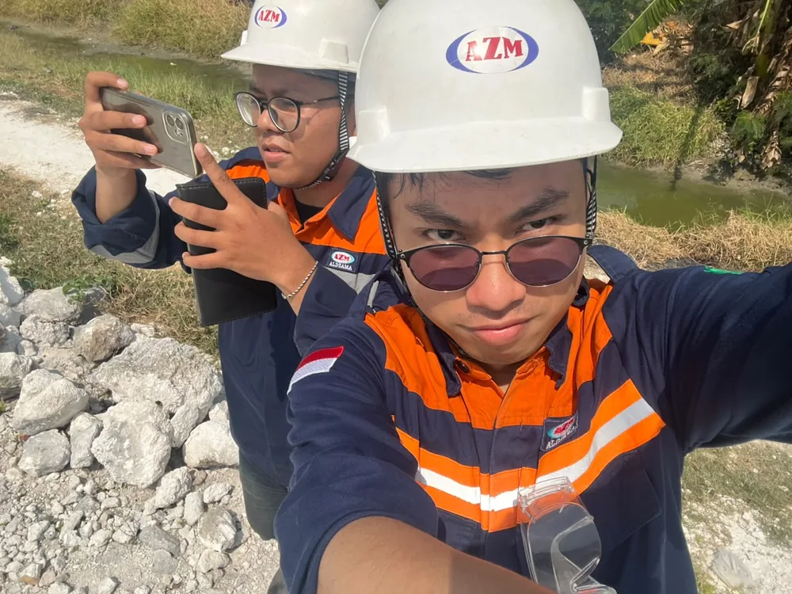
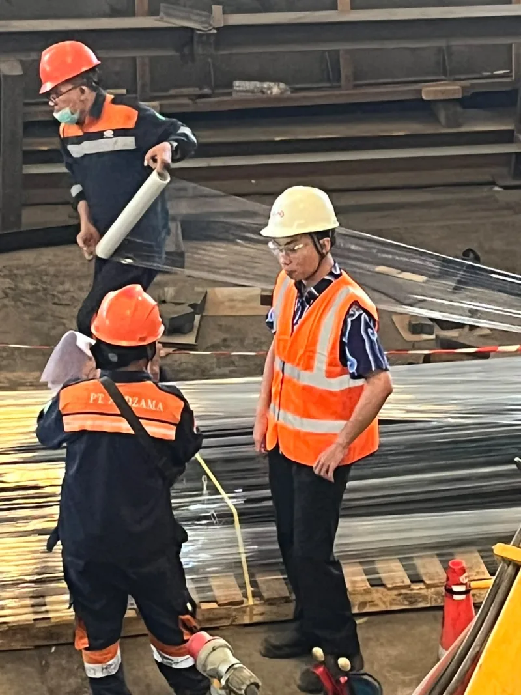
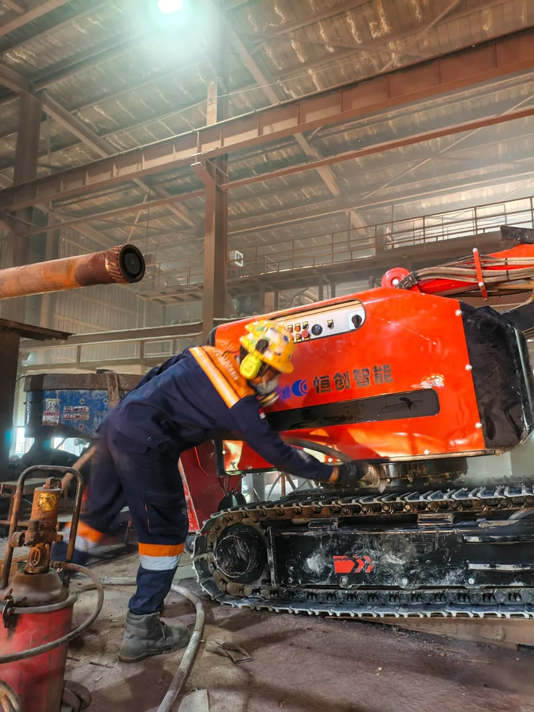
Project Engineer & Furnace Control Engineer
PT Aldzama, PTFI Copper Chip Milling System / Furnace & Burner Control
- Engineered the full tender documentation package, securing contract award for the Copper Chip Milling System project.
- Commissioned Omron PLC-based furnace control programs for LPG burner systems.
- Authored K3/HSE documentation to PTFI safety standards: JSA, HIRADC, Permit-to-Work, Emergency Response Plans.
- Specified the process solution around 2× Sigma X6132 horizontal milling machines (7.5 kW, 30–1,500 RPM) and a Ø31 mm HSS M42 Cobalt end mill, sized to meet PTFI's 90 ton/year, ≥95% dimensional-spec KPI for copper chip production.
- Verified the proposed process through an actual machining trial — chips measured 7 × 1 × 1 mm, within PTFI's 15 × 5 × 1 mm dimensional limit — before the proposal was submitted.
- Drafted the plant general layout (5 working zones, one-way material flow), major equipment/consumables/spare-part lists, and the 24-month S-curve production and preparation schedule.


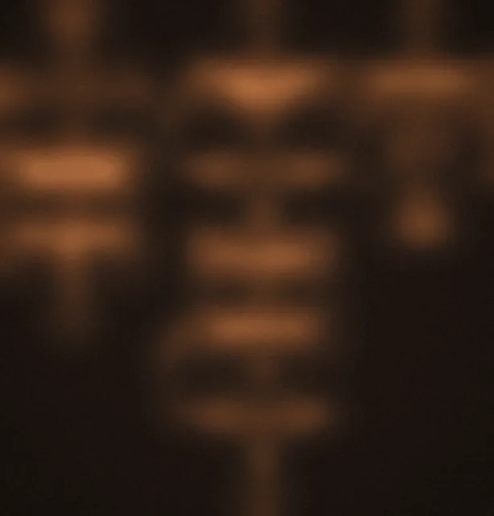

Junior Engineer, Instrumentation and Robotics
PT Aldzama, Gresik, East Java
Awarded the Best Idea Prize (Kaizen Improvement Category) and Most Active Prize (Improvement Category) for contributions to process optimization and workplace innovation.
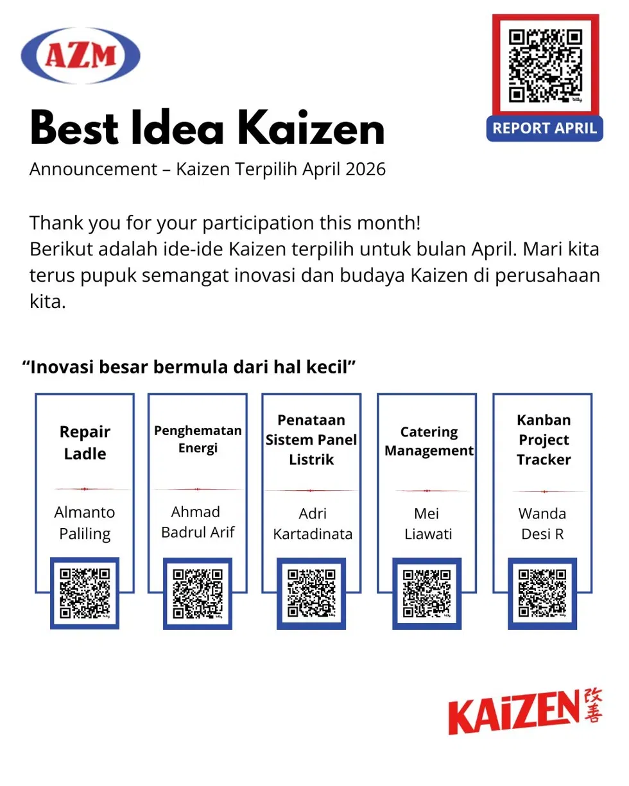
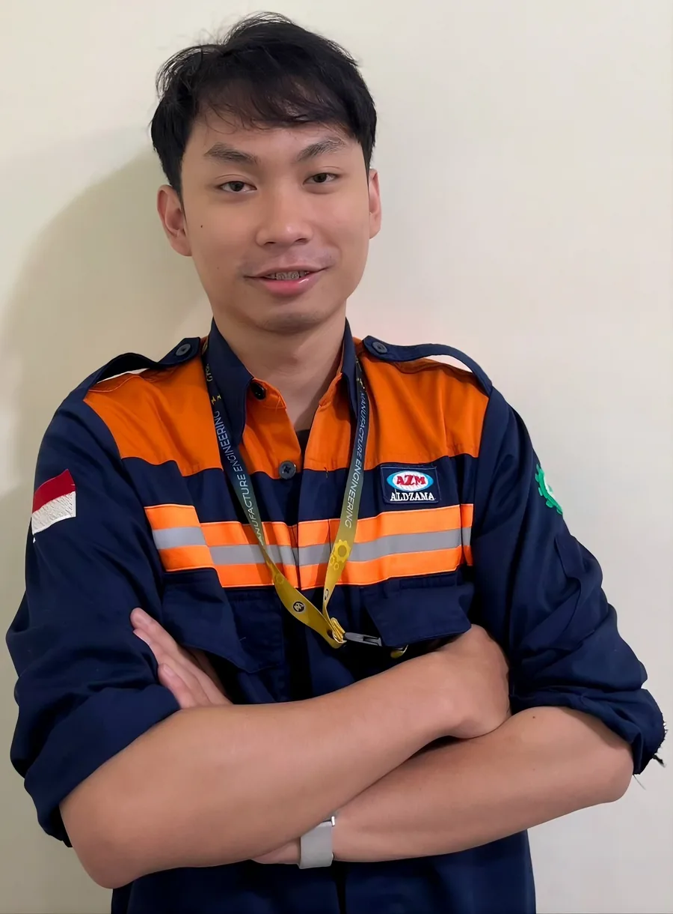
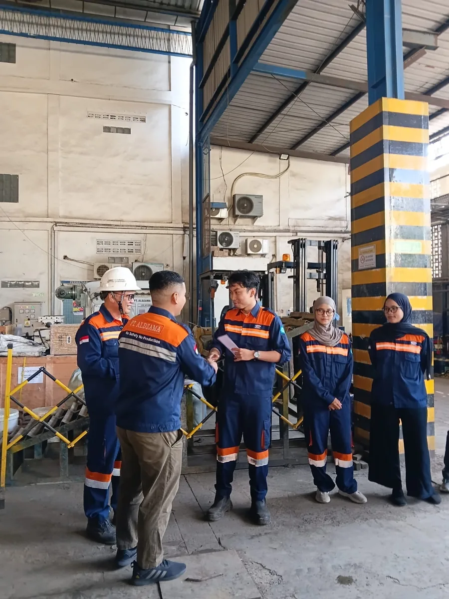
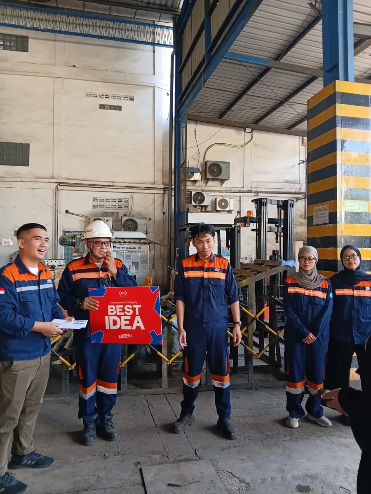
Mechanical Drafter / R&D Electrical Engineer
PT Aldzama, Gresik, East Java
- Drafted 2D technical specifications and assembly drawings using AutoCAD and SolidWorks.
- Assembled prototype control panels integrating contactors, relay logic modules, inverters and PLC I/O wiring to IEC/PUIL standards.
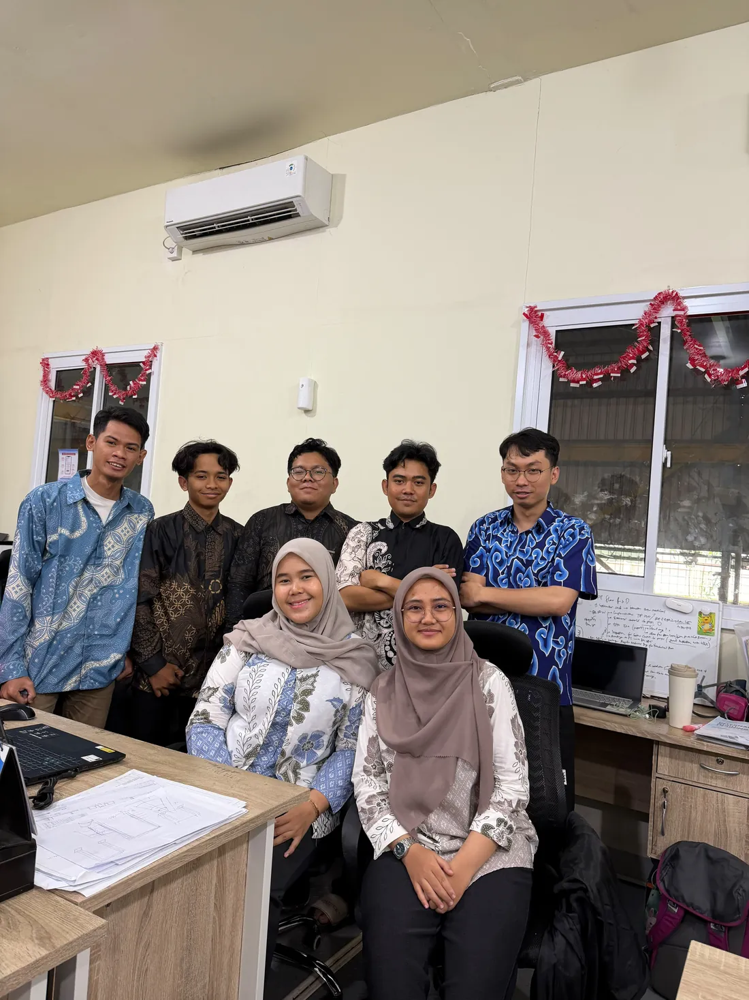
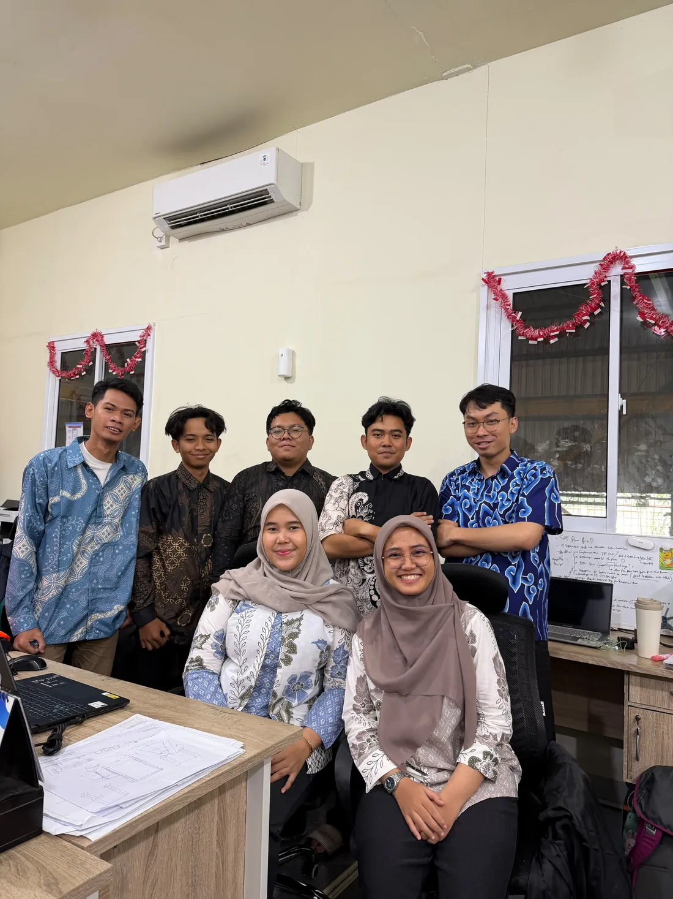
Final Year Thesis Researcher — Underwater Sonar Detection System
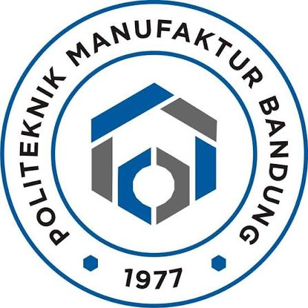
Politeknik Manufaktur Bandung, Bandung, West Java
- Designed and fabricated a static six-transducer DYP-L04 piezoelectric sonar array in a sealed, O-ring-gasketed ABS housing, achieving 175° of sectoral horizontal coverage without any moving/scanning parts.
- Engineered the full signal chain: Arduino Uno UART firmware for round-robin sensor polling, plus a battery/boost-converter power stage (4×18650 Li-ion → 24 V) sized for ~6.6 hours of runtime.
- Built a Python-based real-time radar GUI with live 2D visualization, SAFE/WARNING/DANGER status thresholds, and serial connection management.
- Validated the prototype through pond field-testing — angular coverage, turbidity-deviation, and live object-detection trials — achieving 0.03–0.05 cm reading precision and object detection to 300 cm.
- Successfully defended the thesis (04 August 2025) and graduated with a cumulative GPA of 3.28/4.00, predicate "Sangat Memuaskan."


Maintenance Engineer Intern, Instrumentation & Control Systems
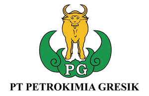
PT Petrokimia Gresik, Gresik, East Java
- Overhauled bagging system maintenance procedures, restoring units to operational specification.
- Gained hands-on exposure to Siemens S7-300 modular PLC systems and I/O diagnostics.
- Recognized by the Maintenance Division Head for training quality and leadership in the intern induction program.
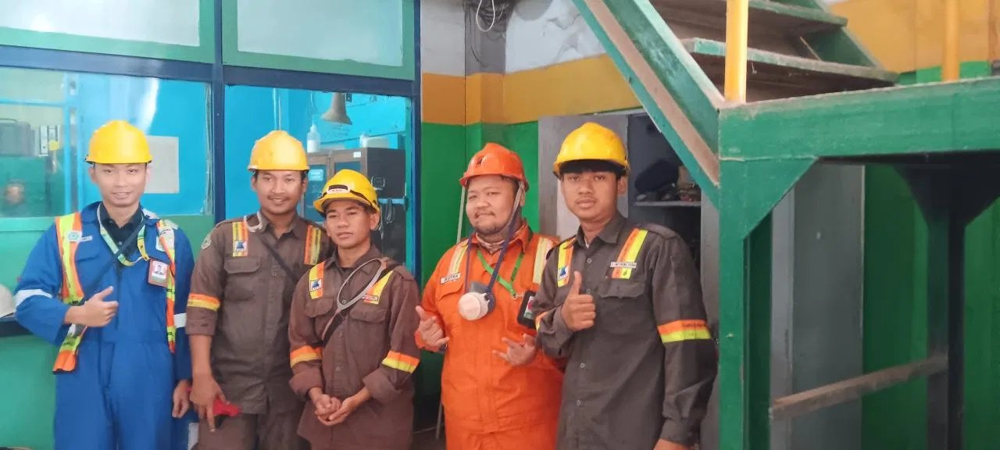

Administration Intern
PT Aldzama, Gresik, East Java
Developed and standardized refinery operational SOPs for PT Freeport Indonesia.
Organizational Experience
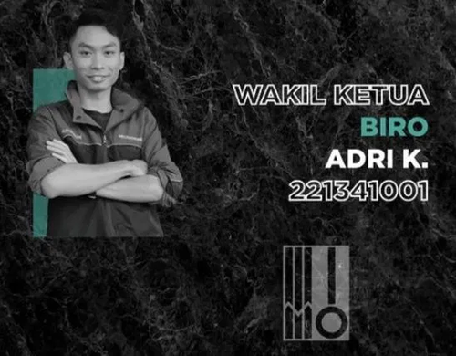
Deputy Head, Administrative & Secretarial Bureau (HIMAMO)
Politeknik Manufaktur Bandung · 2021 s.d. 2025
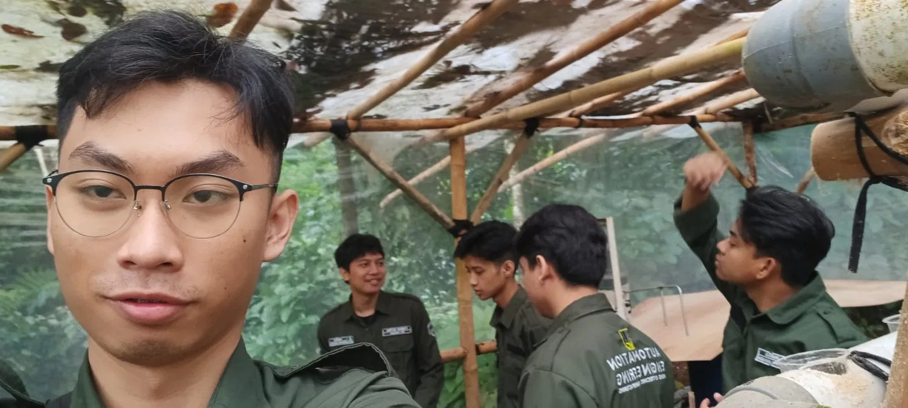
Group Leader, Community Service Program (KKN)
Politeknik Manufaktur Bandung · Oct s.d. Nov 2024
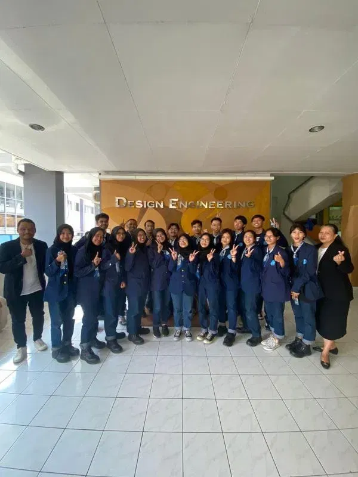
President, Student Choir
Politeknik Manufaktur Bandung · Apr s.d. Dec 2023